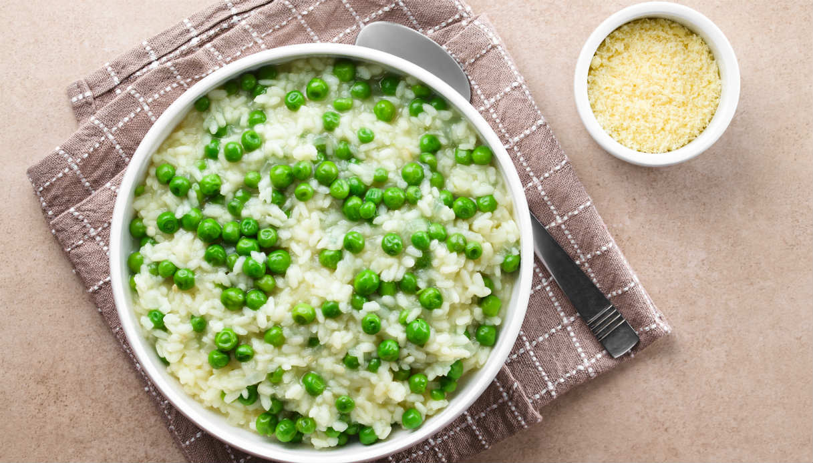
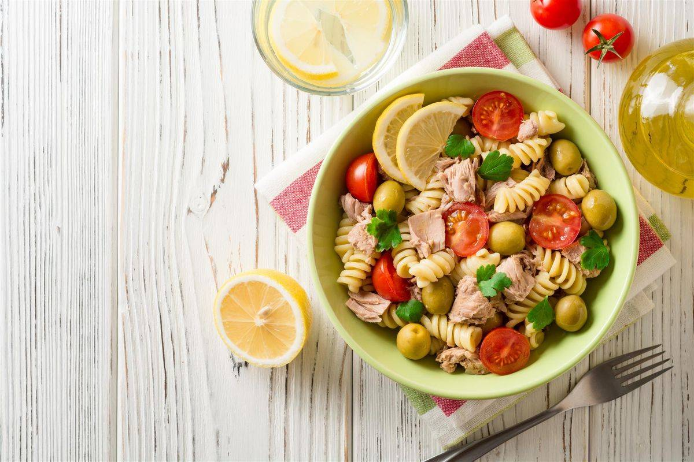
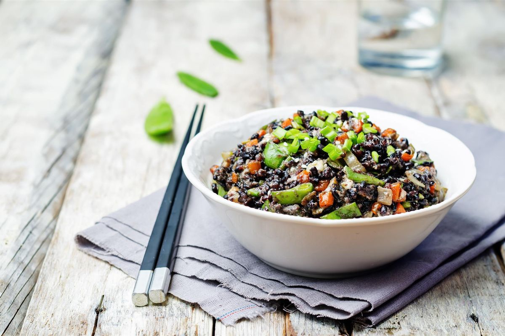

- 160 gr pasta (di grano duro o integrale)
- 150 ml salsa di pomodoro ciliegino
- 1 melanzana lunga
Lava e taglia la melanzana a fette sottili. Fai scaldare una padella e cuoci le melanzane. A fine cottura condisci le fette di melanzane con sale e pepe a tuo gusto. Intanto metti a bollire l’acqua per cuocere la pasta. Scolala al dente e condisci la pasta con la salsa. Impiatta la pasta con la salsa ed aggiungi le melanzane arrostite.
Et voilà, il primo piatto è pronto in pochi minuti!
Riso basmati e piselli

- 160 gr riso basmati
- 150 gr piselli finissimi (vanno bene anche quelli surgelati)
- 1/2 dado
- q.b. olio
Inizialmente dedicati al riso. Metti il riso basmati in una ciotola e sciacqualo con acqua fredda; ripeti per due/ tre volte.
Quindi cuoci i piselli. Metti sul fuoco una pentola, falla scaldare e metti un filo di olio sul fondo. Appena è caldo aggiungi i piselli anche surgelati e mezzo dado vegetale, infine aggiungi 300 ml di acqua e falli cuocere.
Appena pronti, unisci il riso ai piselli ed il gioco è fatto!
Insalata di pasta

- 160 gr di pasta (preferibilmente fusilli)
- 100 gr pomodorini
- 20 gr olive verdi denocciolate
- 120 gr tonno al naturale
- 2 cucchiai olio evo
- q.b. basilico fresco
- q.b. sale
Cuoci la pasta in abbondante acqua salata per il tempo indicato sulla confezione, in modo da ottenere una cottura al dente.
Intanto lava in pomodorini, tagliali a metà e trasferiscili in una ciotola capiente. Condisci i pomodorini con sale e le foglie di basilico. Sgocciola il tonno al naturale e uniscilo ai pomodorini.
Quando la pasta sarà cotta scolala ed uniscila agli altri ingredienti. Metti un filo di olio d’oliva ed amalgama. Infine aggiungi le olive verdi denocciolate e mescola ancora una volta. Lascia raffreddare e gustala!
Riso venere con zucchine e zenzero

- 160 gr riso venere
- 2 zucchine
- q.b. olio
- q.b. sale
- q.b. zenzero fresco
Lava le zucchine, togli le estremità e tagliale a cubetti. In una padella fai scaldare un filo d’olio d’oliva e fai rosolare le zucchine per circa 15 minuti aggiungendo un pizzico di sale e di pepe. Nel frattempo cuoci il riso nero in abbondante acqua salata. Quando il riso sarà pronto scolalo ed uniscilo alle zucchine cotte in padella e allo zenzero fresco. Infine gusta questo piatto veloce e light!